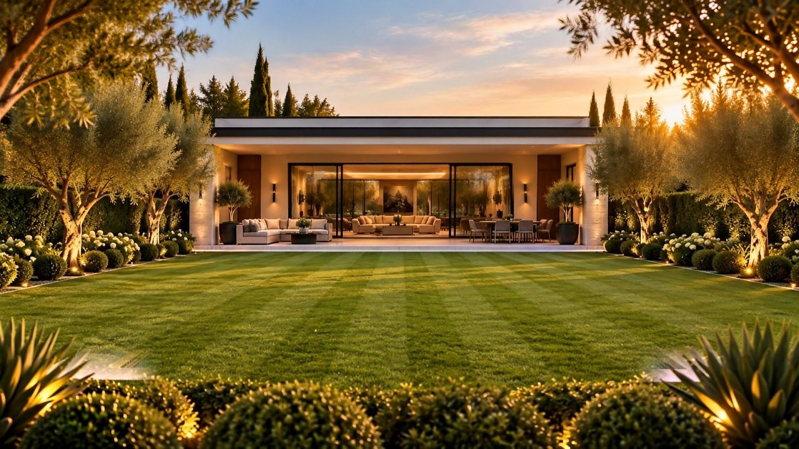
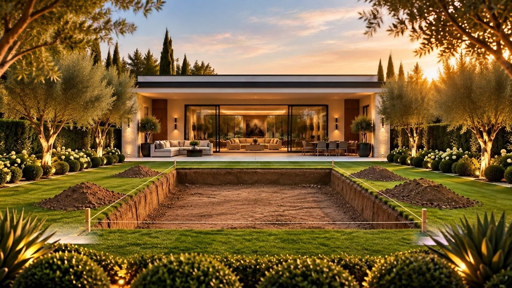
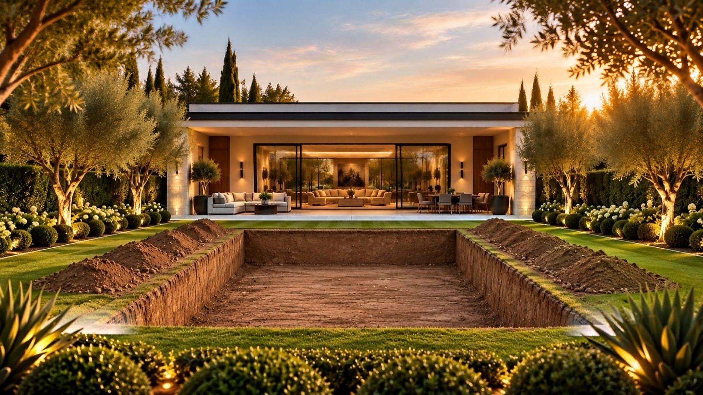
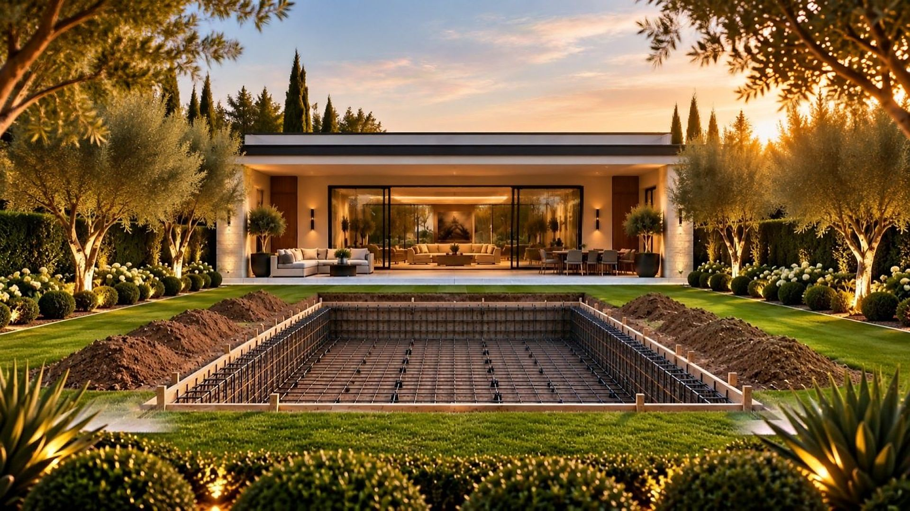
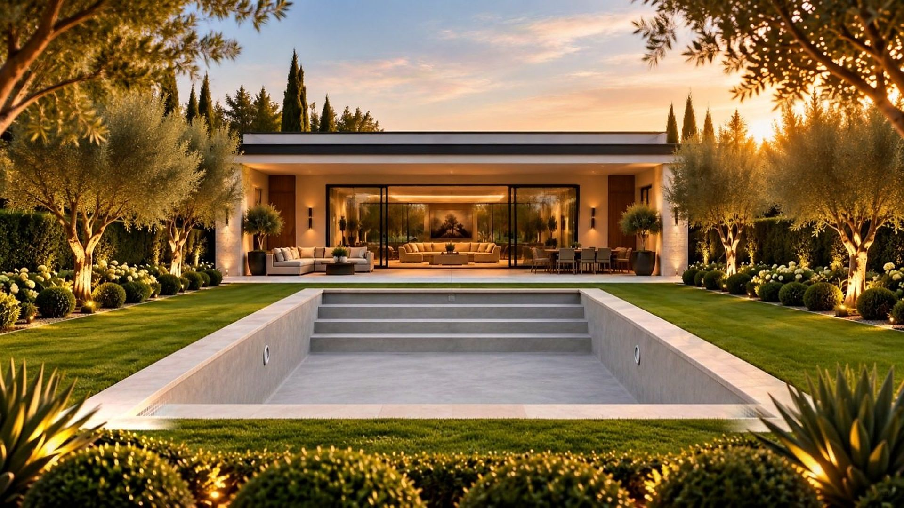
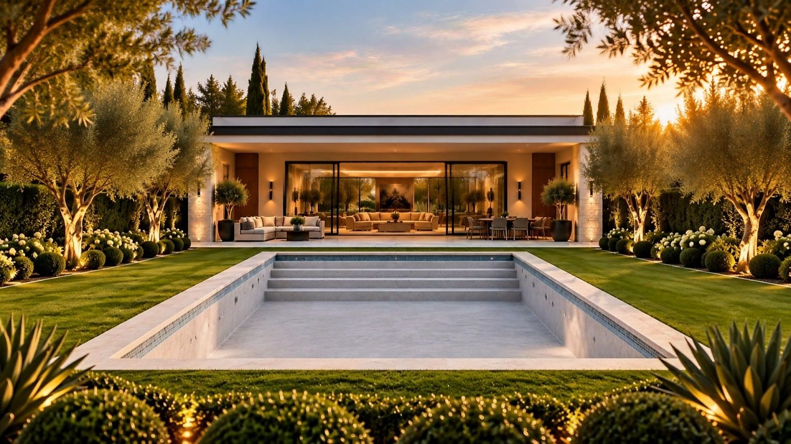
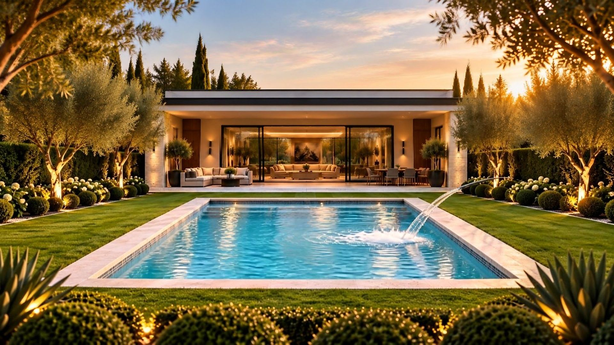
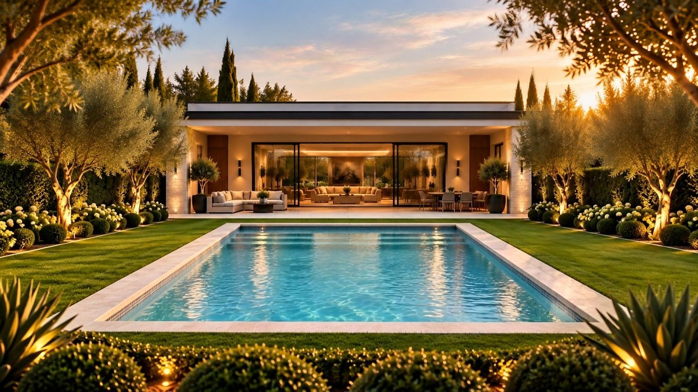
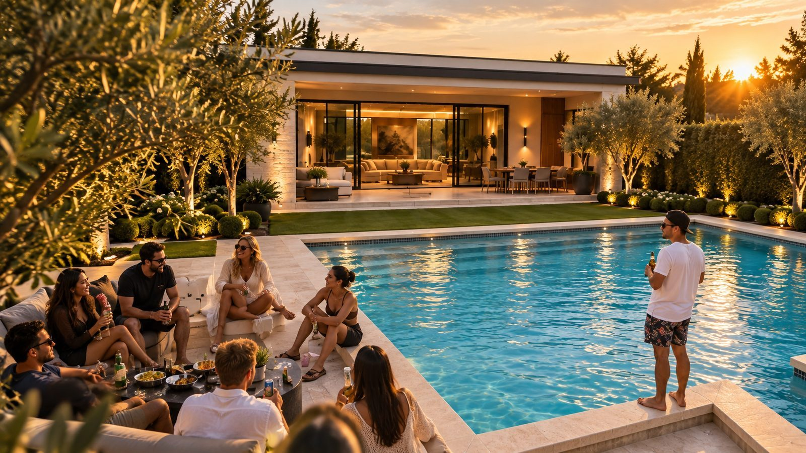

אפיק
גללו, ותראו את החצר נבנית.
קו ראשון בדשא
מסמנים את הבריכה על הקרקע לפי ההדמיה, לסנטימטר.
חופרים לעומק
לפי בדיקת הקרקע של המהנדס. העפר מפונה באותו היום.
השלד שלא רואים
כלוב זיון, צנרת והכנות לתאורה, לפני שהבטון נכנס.
בטון ומדרגות
שלד בטון מזוין ומדרגות כניסה רחבות, יצוקים במקום.
טיח, פסיפס ואבן
גמר בעבודת יד ושפת טרוונטין בגובה הדשא.
ממלאים
מילוי, איזון המים והפעלת המערכות. 72 שעות של בדיקות.
עשרה שבועות.
חצר אחרת.
הקפיצה הראשונה שלכם יכולה להיות בקיץ הבא.
החדר הכי יפה בבית נמצא בחוץ. אנחנו מתכננים אותו, בונים אותו בעשרה שבועות, ונשארים בשבילו גם אחרי שהמים כבר צלולים.
אפיק מתכננת ובונה בריכות שחייה פרטיות וחצרות שלמות. צוות אחד מהביקור הראשון ועד המסירה, בלי קבלני משנה מתחלפים. מחיר סגור לפני שנכנסים לשטח, ולוח זמנים שנחתם בחוזה.
ככה עובד התהליךלא מבטיחים.חותמים.
שקלים על כל שבוע איחור
תאריך המסירה כתוב בחוזה. אם איחרנו באשמתנו, אנחנו משלמים לכם, על כל שבוע.
תוספות באמצע העבודה
המחיר שחתמתם עליו הוא המחיר שתשלמו. מה שלא נכנס להצעה, לא נכנס לחשבון.
שנות אחריות על השלד
ועוד שלוש שנים על המערכות ועל הגמר, עם מספר וואטסאפ שעונה גם אחרי המסירה.
מהמיםועד הגדר.
שש עבודות, צוות אחד. אפשר להתחיל בבריכה ולהמשיך לחצר כולה, או להפך. לחיצה על שורה פותחת פנייה מוכנה.
בריכות בהתאמה אישית
תכנון ובנייה מאפס, סקימר או עודפים, בכל מידה ובכל צורה.
02שיפוץ בריכה קיימת
טיח, פסיפס, חיפוי ומערכות חדשות. בריכה ותיקה שנראית כמו ביום הראשון.
03ספא וג׳קוזי משולב
ספא מחומם בתוך הבריכה או לצידה, עם ג׳טים ובקרה מהטלפון.
04פיתוח החצר כולה
דק, ריצוף, מדשאות, גינון ותאורת גן. החצר כולה, לא רק המים.
05תאורה ואוטומציה
תאורת LED, חימום, סינון וכיסוי, הכול נשלט מהנייד.
06שירות ותחזוקה
ביקור שבועי, איזון מים ותחזוקת מערכות. השנה הראשונה עלינו.

קיבלנו תאריך סיום ביום הראשון, וסיימו בדיוק בו. אחרי שלושה קבלנים אחרים זה הרגיש כמעט מוזר.
הילדים לא יוצאים מהמים מאפריל. ואנחנו יושבים ליד הבריכה כל ערב, כאילו יצאנו לחופשה בלי לזוז מהבית.
ההדמיה הייתה זהה למה שקיבלנו בסוף. אפילו גוון המים.
תראו, ותחשבו.

הקיץ הבאמתחיל עכשיו.
תכנון והיתר לוקחים כמה חודשים, והבנייה עוד עשרה שבועות. מי שמתחיל לתכנן החודש, יכול לשחות בבריכה שלו ביוני.